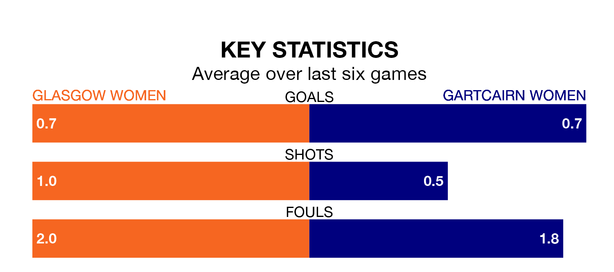

Sunday's match at New Tinto Park sees two relegation candidates play each other, as fifth-ranked Glasgow Women host bottom of the table Gartcairn Women.
Glasgow have picked up 14 points from their first 14 SWPL 2 games, with three wins and five draws.
That is 12 points more than Gartcairn have collected, having won none and drawn two.
Glasgow are in disappointing form in SWPL 2, with one win and two draws from their last six games.
With no wins and a draw over that period, Gartcairn's form is worse – they have taken one point from 18, compared to the hosts' five.
With 11 goals in 13 games so far this season, the away side are the league's joint-second-lowest scorers with 0.8 goals per game. And they are conceding more than average, letting in 50 goals at a rate of 3.8 per game.
Glasgow are also below average scorers, with 0.9 goals per game, compared to a league average of 1.9. They have conceded 1.9 goals per game.
Glasgow's last match was on December 17, a 0-0 draw against Stirling University Women.
Gartcairn drew 2-2 with Kilmarnock Women last time out, also on December 17, with on the scoresheet.
Updated: 15:34, 08/01/24